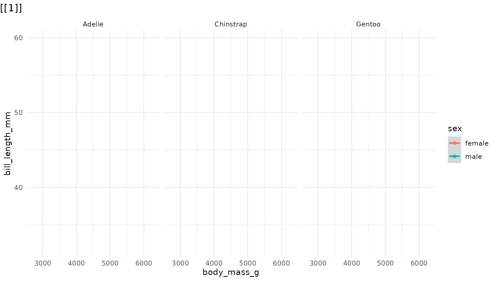
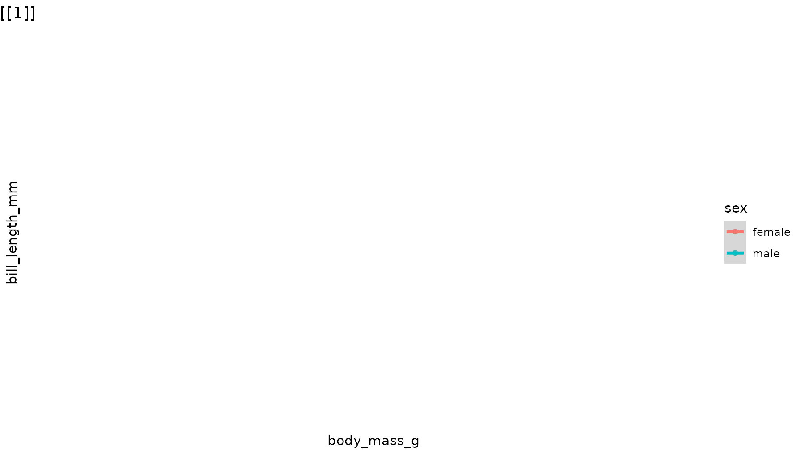
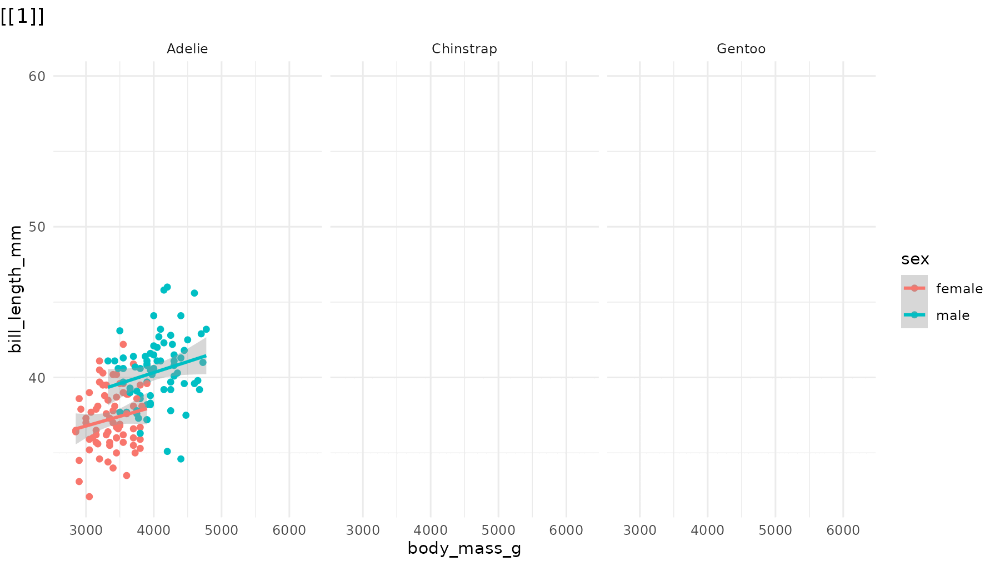
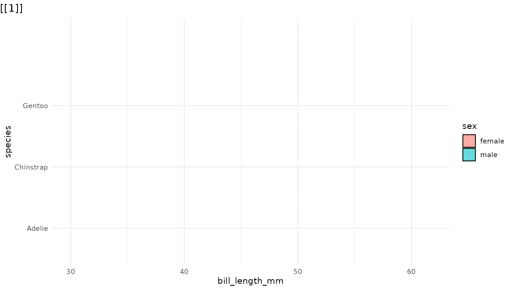
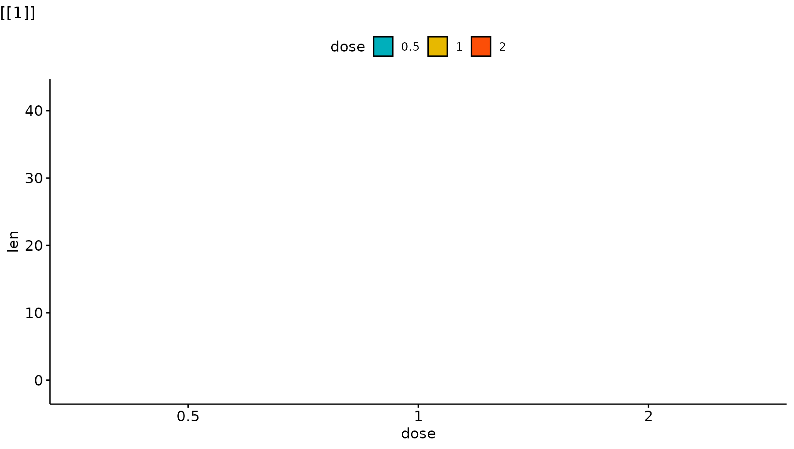

The goal of ggreveal is to make it easy to incrementally reveal parts of a ggplot. The package offers several ways to split a finished plot into a sequence of steps, each showing a bit more than the last.
For the examples below, we will use the penguins dataset
from palmerpenguins,
which contains measurements of penguins from three species.
library(palmerpenguins)
library(ggplot2)
library(ggreveal)
penguins <- penguins[!is.na(penguins$sex), ]
p1 <- ggplot(penguins,
aes(x = body_mass_g,
y = bill_length_mm,
color = sex)) +
geom_point() +
geom_smooth(method = "lm", formula = "y ~ x", linewidth = 1) +
facet_wrap(~species) +
theme_minimal()
p1
Note: ggreveal does not produce animations. All functions return a list of ggplot objects. The animated GIFs here are just a compact way to display that list.
Reveal by aesthetic
reveal_aes() splits the plot by the levels of any
aesthetic mapping. Here, sex is mapped to color, so
reveal_aes(p1, aes = "color") produces a list with three
plots: first a blank layout, then a plot adding male penguins, and
finally one that adds female penguins.
reveal_aes(p1, aes = "color")
By default, the first plot in the list is the blank frame showing only layout elements (axes, legend, facet labels, etc) with no data, and the last plot is identical to the original plot. See section Controlling reveal order for how to modify this behaviour.
reveal_aes() accepts any aesthetic. Mapping sex to shape
instead:
p2 <- ggplot(penguins,
aes(x = body_mass_g,
y = bill_length_mm,
shape = sex)) +
geom_point() +
geom_smooth(method = "lm", formula = "y ~ x", linewidth = 1) +
facet_wrap(~species) +
scale_shape_manual(values = c(1, 15)) +
theme_minimal()
reveal_aes(p2, aes = "shape") 
Note that even though geom_smooth() does not use the
shape aesthetic, reveal_aes() also groups the
lines by sex because shape was defined in the global call
to aes(). If shape were defined only inside
geom_point(), the regression lines would all appear
together in a single step.
reveal_x() and reveal_y() are shortcuts for
reveal_aes(aes = "x") and
reveal_aes(aes = "y"). They work best when the axis
variable is discrete or has only a few values:
p3 <- ggplot(penguins,
aes(x = sex, y = bill_length_mm)) +
geom_boxplot() +
theme_minimal()
reveal_aes(p3, aes = "x") 
If you find yourself needing to incrementally reveal a large number
of values (e.g. a time series developing over the x axis), you might
want to use gganimate
instead.
reveal_groups() is equivalent to
reveal_aes(aes = "group"). It is useful when groups are
implicit (ggplot2 automatically groups data by the interaction of all
discrete variables).
Reveal by panel/facet
reveal_panels() reveals one facet at a time. By default
(what = "data") the layout elements are visible from the
start, and only the geoms appear incrementally. Again, the last element
in the list corresponds to the original plot:
reveal_panels(p1) 
Set what = "everything" to incrementally reveal entire
panels, including their axes and labels:
reveal_panels(p1, what = "everything")
Reveal by layer
reveal_layers() shows, you guessed it, one layer at a
time. Here, the points appear first, then the regression lines are added
on top:
reveal_layers(p1)Reveal a patchwork
reveal_patchwork() works on composite figures built with
the patchwork
package, revealing one constituent plot at a time. The first element in
the list shows the overall patchwork layout with all child plots blanked
out. Each subsequent element adds one more child plot, in the order they
were composed. The final element matches the original patchwork.
library(patchwork)
p4 <- ggplot(penguins, aes(x = species)) +
geom_bar() +
theme_minimal()
pw <- p1 / (p3 + p4)
reveal_patchwork(pw)Controlling reveal order
The main reveal_* functions accept an order
argument: a numeric vector that specifies which elements to reveal and
in what sequence. This lets you:
Reorder the sequence. For example, to reveal species in
reverse order in reveal_panels():
# Default: Adelie → Chinstrap → Gentoo
# Reversed: Gentoo → Chinstrap → Adelie
reveal_panels(p1, order = c(3, 2, 1))Skip elements. Omit a step entirely by leaving its index out:
# Only reveal Adelie (panel 1) and Gentoo (panel 3), skipping Chinstrap
reveal_panels(p1, order = c(1, 3))Drop the blank opening frame by including -1 in
the order vector:
# Start directly with data, no blank frame
reveal_panels(p1, order = c(-1, 1, 2, 3))
The same order argument works identically across
reveal_aes(), reveal_groups(),
reveal_layers(), reveal_panels(), and
reveal_patchwork().
Saving incremental plots
reveal_save() saves each plot in the list to a numbered
file using ggsave(). Any extra arguments
(e.g. width, height) are forwarded directly to
ggsave():
reveal_save(plot_list, "myplot.png", width = 9, height = 5)This produces files like myplot_0.png,
myplot_1.png, myplot_2_last.png.
Examples with other ggplot2 extensions
Because they manipulate basic components of a ggplot object (layers, geoms, facets), the functions in ggreveal should work with most ggplot2 extensions.1 Some examples:
library(ggridges)
p_ridges <- ggplot(penguins,
aes(x = bill_length_mm,
y = species,
fill = sex)) +
geom_density_ridges(alpha = 0.6) +
theme_minimal()
reveal_y(p_ridges)
# Adapted from ggpubr docs
library(ggpubr)
data("ToothGrowth")
my_comparisons <- list( c("0.5", "1"), c("1", "2"), c("0.5", "2") )
p_ggpubr <- ggviolin(ToothGrowth, x = "dose", y = "len", fill = "dose",
palette = c("#00AFBB", "#E7B800", "#FC4E07"),
add = "boxplot", add.params = list(fill = "white")) +
stat_compare_means(comparisons = my_comparisons, label = "p.signif")
reveal_layers(p_ggpubr)
library(geobr)
library(sf)
library(ggmapinset)
states <- read_state()
campos <- read_municipality(code_muni=3301009)
rj <- read_municipality(code_muni=3304557)
inset1 <- configure_inset(
shape_circle(
centre = st_centroid(campos),
radius = 70
),
scale = 4,
translation = c(450, 0)
)
inset2 <- configure_inset(
shape_circle(
centre = st_centroid(rj),
radius = 70
),
scale = 4,
translation = c(0, -450)
)
p_br <- ggplot() +
geom_sf(data = states,
group = 1) +
geom_sf_inset(data = campos,
inset = inset1,
fill = "#00BFC4",
group = 2) +
geom_inset_frame(inset = inset1,
group = 2) +
geom_sf_inset(data = rj,
inset = inset2,
fill = "#00BFC4",
group = 3) +
geom_inset_frame(inset = inset2,
group = 3) +
theme_minimal()
reveal_aes(p_br, "group")